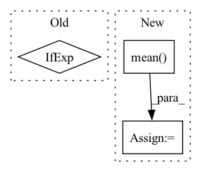

Pattern ID :11557
Before Change
// Dmain: Maximize logits for real images.
// Dr1: Apply R1 regularization.
if do_Dmain or do_Dr1:
name = "Dreal_Dr1" if do_Dmain and do_Dr1 else "Dreal" if do_Dmain else "Dr1"
real_img_tmp = real_img.detach().requires_grad_(do_Dr1)
real_logits = self.run_D(real_img_tmp, real_c, sync=sync)After Change
// ddd = np.mean((dic2[phase + "r1_penalty"] - r1_penalty.cpu().detach().numpy()) ** 2)
// print("ddd=%.6f" % ddd)
loss_Dr1 = r1_penalty * (self.r1_gamma / 2)
loss_numpy["loss_Dr1"] = loss_Dr1.cpu().detach().numpy().mean()
loss4 = (loss_Dreal + loss_Dr1).mean() * float(gain)
// if do_Dmain:
// loss4 += loss3In pattern: SUPERPATTERN
Frequency: 4
Non-data size: 3
Instances Fragment ID: 39233334
Project Name: miemie2013/miemiegan
Commit Name: fbc8738996ce75111be885ba7ac313d85969a2b8
Time: 2022-02-25
Author: 53960695+miemie2013@users.noreply.github.com
File Name: mmgan/models/architectures/styleganv2ada_model.py
M Class Name: StyleGANv2ADAModel
N Class Name: StyleGANv2ADAModel
M Method Name: accumulate_gradients(8)
N Method Name: accumulate_gradients(8)
M Parent Class: torch.nn.Module
N Parent Class: torch.nn.Module
M File Name: mmgan/models/architectures/styleganv2ada_model.py
N File Name: mmgan/models/architectures/styleganv2ada_model.py
M Start Line: 138
M End Line: 260
N Start Line: 143
N End Line: 262
Before Change
if self.output_layer.bias is not None:
new_bias = torch.empty(n_classes_to_add)
fan_in, _ = nn.init._calculate_fan_in_and_fan_out(self.output_layer.weight)
bound = 1 / math.sqrt(fan_in) if fan_in > 0 else 0
nn.init.uniform_(new_bias, -bound, bound)
self.output_layer.bias = nn.parameter.Parameter(
torch.cat([self.output_layer.bias, new_bias], axis=0)After Change
)
if self.output_layer.bias is not None:
new_bias = torch.mean( self.output_layer.bias) .unsqueeze(1).T
if n_classes_to_add > 1:
new_bias = new_bias.unsqueeze(1).T.repeat(1, n_classes_to_add, 1).squeeze()
self.output_layer.bias = nn.parameter.Parameter(
torch.cat([self.output_layer.bias, new_bias], axis=0)
) Fragment ID: 39233333
Project Name: online-ml/river-torch
Commit Name: 27f914a787bc844de5af4720487e2314f206960d
Time: 2022-09-26
Author: cedric.kulbach@googlemail.com
File Name: river_torch/classification/classifier.py
M Class Name: Classifier
N Class Name: Classifier
M Method Name: _add_output_features(2)
N Method Name: _add_output_features(2)
M Parent Class: DeepEstimator,base.Classifier
N Parent Class: DeepEstimator,base.Classifier
M File Name: river_torch/classification/classifier.py
N File Name: river_torch/classification/classifier.py
M Start Line: 300
M End Line: 310
N Start Line: 300
N End Line: 311
Before Change
area_ps = ps[..., i, 0]
figure_title = iou_type + "-" + class_name + "-" + areaNames[i]
aps = [ps_.mean() for ps_ in area_ps]
ps_curve = [ps_.mean(axis=1) if ps_.ndim > 1 else ps_ for ps_ in area_ps]
ps_curve.insert(0, np.zeros(ps_curve[0].shape))
fig = plt.figure()
ax = plt.subplot(111)After Change
if ps_.ndim > 1:
ps_mean = np.zeros((ps_.shape[0],))
for ind, ps_threshold in enumerate(ps_):
ps_mean[ind] = ps_threshold[ps_threshold > -1].mean()
ps_curve.append(ps_mean)
else:
ps_curve.append(ps_)
ps_curve.insert(0, np.zeros(ps_curve[0].shape)) Fragment ID: 39233331
Project Name: obss/sahi
Commit Name: c358cc200a67ed985790bc19deccec5fe1c4e75d
Time: 2022-01-08
Author: 34196005+fcakyon@users.noreply.github.com
File Name: sahi/scripts/coco_error_analysis.py
M Class Name: AnonimousClass
N Class Name: AnonimousClass
M Method Name: _makeplot(5)
N Method Name: _makeplot(5)
M Parent Class:
N Parent Class:
M File Name: sahi/scripts/coco_error_analysis.py
N File Name: sahi/scripts/coco_error_analysis.py
M Start Line: 16
M End Line: 32
N Start Line: 31
N End Line: 43
Before Change
err = np.mean(
np.abs(np.concatenate(coeffs) - torch.cat(coeffs2, -1).squeeze().numpy())
)
print("haar coefficient error scale 2", err, ["ok" if err < 1e-4 else "failed!"])
assert err < 1e-4
After Change
print("haar coefficient error scale 2", err, ["ok" if err < 1e-6 else "failed!"])
assert np.allclose(pywt_coeffs, ptwt_coeffs)
rec = waverec(coeffs2, wavelet).squeeze().numpy()
err = np.mean( np.abs((data - rec)))
print("haar reconstruction error scale 2", err, ["ok" if err < 1e-6 else "failed!"])
assert np.allclose(data, rec)
def test_conv_fwt_haar_lvl2_odd(): Fragment ID: 39233327
Project Name: v0lta/pytorch-wavelet-toolbox
Commit Name: c52a0038ca7ceb817da834840a1655d55ff6f1a3
Time: 2021-07-02
Author: moritz@wolter.tech
File Name: tests/test_convolution_fwt.py
M Class Name: AnonimousClass
N Class Name: AnonimousClass
M Method Name: test_conv_fwt_haar_lvl2(0)
N Method Name: test_conv_fwt_haar_lvl2(0)
M Parent Class:
N Parent Class:
M File Name: tests/test_convolution_fwt.py
N File Name: tests/test_convolution_fwt.py
M Start Line: 42
M End Line: 49
N Start Line: 22
N End Line: 56